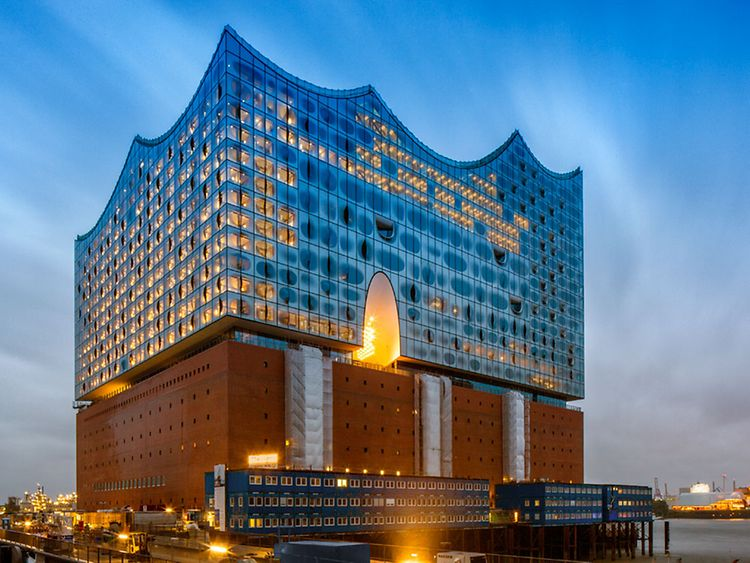
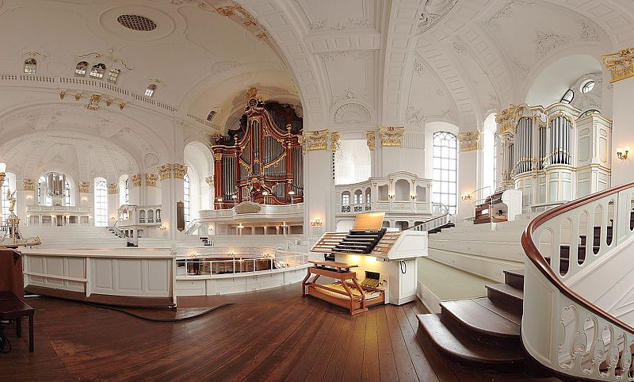

Hamburg Harbour
Take a ferry ride through what use to be the world's busiest harbour.Hamburg Rathaus
On the outside the architectural style is Neo-Renaissance, which is abandoned inside for several historical elements.[5] It is one of the few completely preserved buildings of historicism in Hamburg.Alster River
For Hamburg's inner city, the river is a major geographical feature and greatly defines its cityscape. Through ponding of the river in the 13th century, two artificial lakes, the Außenalster and the smaller Binnenalster were created in central Hamburg

Elbphilharmonie Music Hall
The Elbphilharmonie is a concert hall in the HafenCity quarter of Hamburg, Germany, on the Grasbrook peninsula of the Elbe River. It is one of the largest and acoustically most advanced concert halls in the world. It is popularly nicknamed Elphi.
Planten un Blomen
The park is famous for its water-light concerts, public theater and music performances. In addition to the gardens, there is a large playground in the southern area of the park. This makes the park a popular place in the city.
Ohlsdorf Cemetery
With its impressive mausoleums, rhododendron bushes, its ponds and birds, sculptures and funerary museum, about two million people from all over the world visit the cemetery every year.
